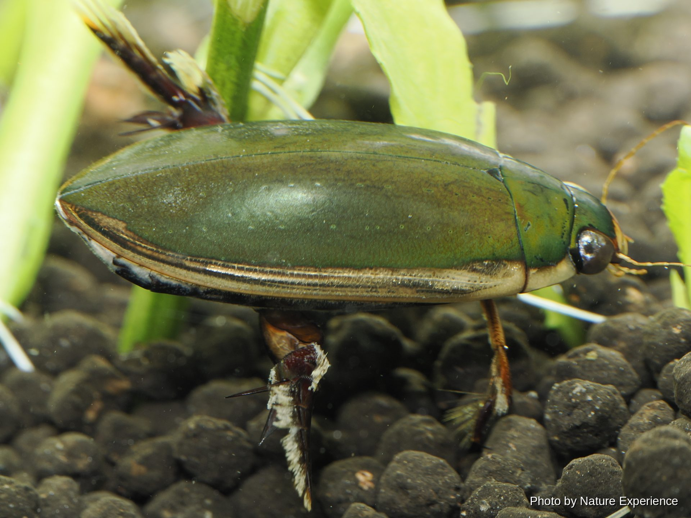
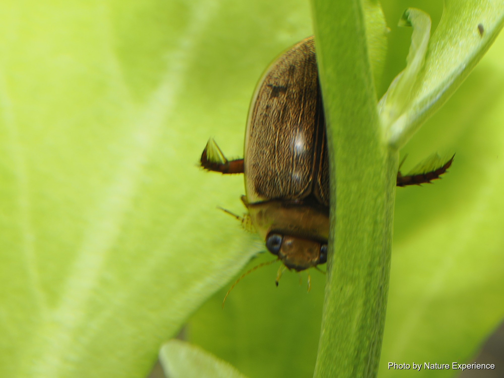
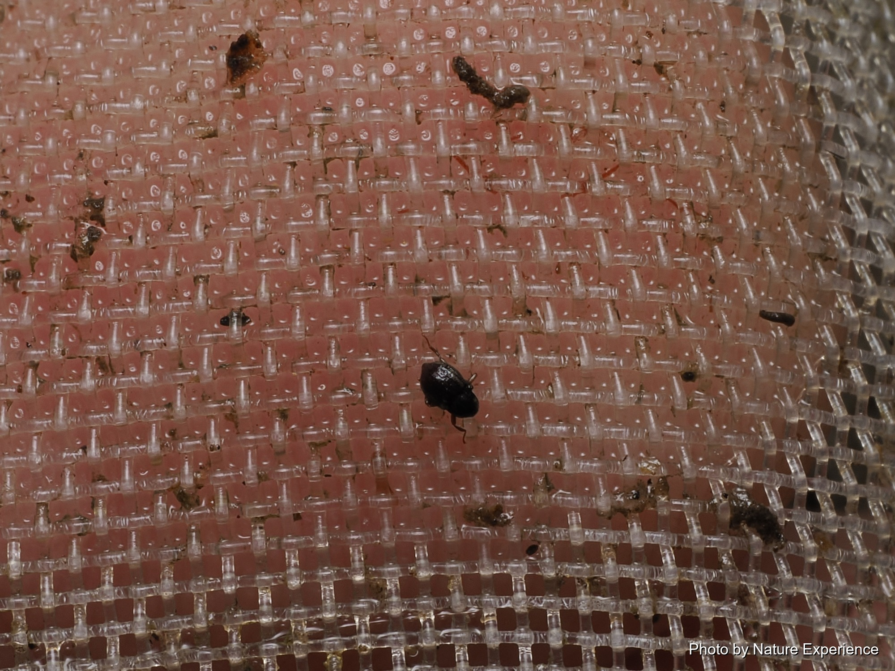
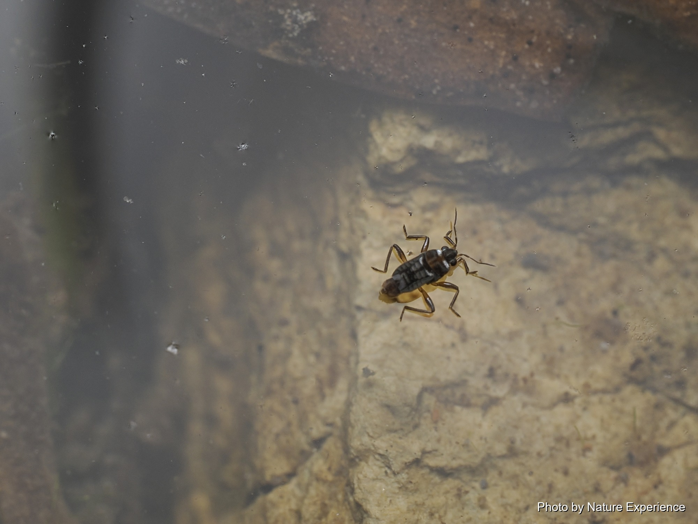

Aquatic Insects
―― Diving Beetles ――

Grows to about 24-29mm. Found on Honshu, Shikoku, Kyushu, the Ryukyu Islands, and the Ogasawara Islands, and abroad in China, the Korean Peninsula, and Taiwan. Elongate-oval and somewhat flattened, with a strongly glossy back ranging from green to brownish black; a yellow rim along the edge of the elytra is the key point for telling it apart from the tawny diving beetle. It lives in ponds and marshes rich in aquatic plants, rice paddies and nearby puddles, fallow fields, and slow-moving channels. Since the 1960s it has declined sharply on Honshu and further south due to pesticide use and field consolidation, and is listed as Vulnerable on the Ministry of the Environment's Red List, but it is still relatively commonly seen in the Ryukyu Islands. It closely resembles the tawny diving beetle in shape and coloring, making the two difficult to tell apart from photographs alone.
Ministry of the Environment Red List: Vulnerable (VU)
Grows to about 11-14mm. A southern-type diving beetle found in the Ryukyu Islands south of Yakushima, and abroad in Taiwan, China, and Southeast Asia. Lives in still water such as ponds and rice paddies rich in aquatic plants. In addition to habitat decline, many diving beetles, including this species, have recently been found being sold for what appears to be the pet trade, so in January 2023 it was designated, along with other diving beetles, a Specified Second-Class Nationally Rare Wild Species. This designation only regulates capture and transfer for the purpose of sale or distribution; capturing it for observation is not restricted. It closely resembles a related species of the same genus distributed west of Honshu, but the two are easy to tell apart since their ranges do not overlap.
Capture for sale or distribution prohibited (Specified Second-Class Nationally Rare Wild Species)Grows to about 18-25mm. Found in Japan in the Ryukyu Islands (from Nakanoshima southward) and the Daito Islands, and abroad in China, Taiwan, Southeast Asia, and South Asia. It closely resembles the black diving beetle, but its body is a slightly slenderer oval, and its upper surface is glossy green to blackish brown. Among the closely related species distributed in the Ryukyu Islands, it is considered relatively stable in numbers. It lives in shallow ponds rich in aquatic plants and in abandoned rice paddies.

A small diving beetle about 10-11mm long. The elytra are overall yellowish brown with no conspicuous striping. Found on Honshu (west of the Kanto region), Shikoku, Kyushu, Tsushima, the Ryukyu Islands, and the Daito Islands, and abroad in China, Taiwan, and Southeast Asia. Lives in open still water such as rice paddies and ponds. Among the diving beetles of the Ryukyu Islands, it is considered, along with the tawny diving beetle and the lesser diving beetle, to be relatively holding its own in numbers.
―― Riffle Beetles ――

A small aquatic beetle found in the Amami and Okinawa island groups and Guam. Riffle beetles live mainly in clean streams; both larvae and adults spend their lives in the water, growing to about 5mm at most, and the family is watched as an indicator of clean rivers. The detailed ecology of this species itself is still largely unknown.

An endemic species found only on Amami Oshima, described in 2005. The genus Dryopomorphus also includes a widespread relative found on Honshu, Shikoku, and Kyushu along with a smaller species, plus another species endemic to the Osumi Islands. Riffle beetles are mainly small aquatic beetles living in clean streams, but the detailed ecology of this species itself is still largely unknown.

A small aquatic beetle found in the Amami, Okinawa, and Yaeyama island groups and Guam. The population on Okinawa Island is distinguished as a separate subspecies, the Okinawa groove riffle beetle. Riffle beetles mainly live in clean streams, but the detailed ecology of this species itself is still largely unknown.

Endemic to Amami Oshima, a species described as recently as 2017. Its form differs from other species in the same genus found on mainland Japan and Taiwan, while the shape of its genitalia, among other features, closely resembles a species distributed in southern China, indicating a close relationship. It is regarded as an example of a relict endemic species: its ancestral species is thought to have once been widespread across the Eurasian continent, and after Amami Oshima became isolated, related populations elsewhere died out, leaving only this species surviving. Riffle beetles are mainly small aquatic beetles living in clean streams, but the detailed ecology of this species itself is still largely unknown.

A small aquatic beetle found in the Amami and Okinawa island groups. Eight species of the genus Zaitzevia are known in Japan, with different species distributed from Honshu to the Yaeyama Islands. Riffle beetles mainly live in clean streams, but the detailed ecology of this species itself is still largely unknown.

A small aquatic beetle found in the Amami and Okinawa island groups. It was originally treated as the sole species of its own genus, but a 2021 molecular phylogenetic study (Kobayashi et al., 2021) placed it in the genus Stenelmis. The genus name (Nomuraelmis) and the Japanese common name were coined in 1964 by Dr. Masataka Satô, and are thought to honor Dr. Nomura, who helped pioneer riffle beetle research in Japan during that same era. The detailed ecology of this species itself is still largely unknown.

A small aquatic beetle recorded on Amami Oshima and Okinoerabujima. It was formerly treated as a Ryukyu-island subspecies of a mainland species, but in 2014 a study using COI gene sequencing and morphological comparison found a major genetic divergence at the species level between the two, and it was elevated to full species status. It is now generally accepted as a distinct species. The Dryopidae are a family closely related to the riffle beetles (Elmidae) and likewise live in clean streams. The detailed ecology of this species itself is still largely unknown.

A small aquatic beetle found in the Amami and Okinawa island groups (no record from Okinawa Island itself), described in 2007. Only two species of the genus Sinonychus are known in Japan; the other is found in Kyushu. The detailed ecology of this species itself is still largely unknown.

A small aquatic beetle found in the Osumi Islands, Tokara Islands, Amami island group, and Okinawa island group. The genus Urumaelmis also includes a second species newly described from Kyushu in 2020, bringing the number of known species in Japan to two. The population on Kuchinoshima in the Tokara Islands is distinguished as a separate subspecies. The detailed ecology of this species itself is still largely unknown.
―― Water Striders ――

A small aquatic insect about 1.5-2.1mm long. Found on Honshu (west of Fukushima Prefecture), Shikoku, and Kyushu, and in the Ryukyu Islands from Kikaijima to Okinawa Island. Commonly seen in dim pools beside small streams and in the shade of rocks, where it preys on small insects that fall onto the water's surface.

A small aquatic insect about 1.7-1.9mm long. Found in the Ryukyu Islands (from the Amami group to the Yaeyama Islands) and Taiwan. Seen in pools formed by seepage beside mountain forest roads; a mating behavior in which males guard females for extended periods has been reported in academic research.

About 1.5-2mm long, one of the smallest of the broad-shouldered water striders. Found on Honshu, Shikoku, Kyushu, Tsushima, the Ryukyu Islands, and the Daito Islands (Minami Daito-jima), and more widely abroad from the Korean Peninsula through China, Southeast Asia, Taiwan, and Oceania. It prefers flowing water such as small rice paddies and streams, and preys on small insects that fall onto the water's surface. The family includes both wingless forms that cannot fly and long-winged forms that can.

Found in the Ryukyu Islands (from Takarajima to Okinawa Island). Several species of the genus Pseudovelia are known in Japan, a group that lives along the banks of rivers and ponds. Sufficient information on the detailed ecology of this species itself has not yet been confirmed.